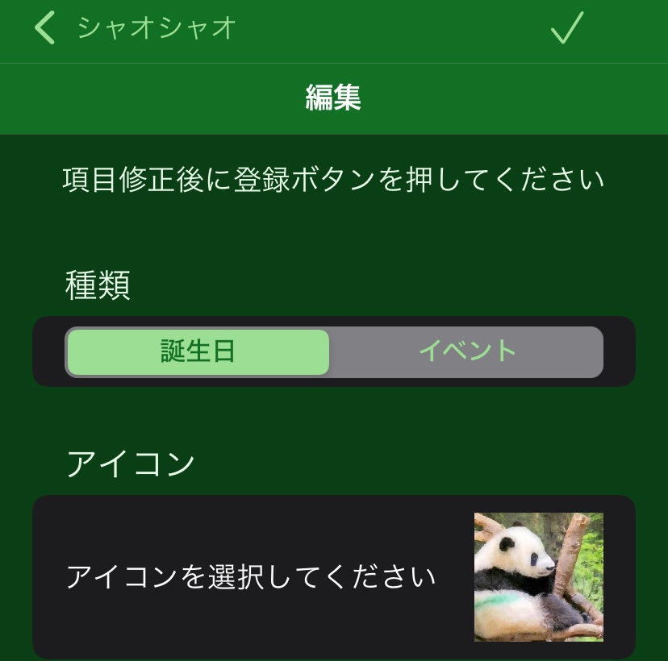

編集画面

- 詳細情報画面で編集ボタンをタップして移動してくる画面です。
- ユーザーが自分で登録した情報を変更できます
画面の説明

- ①詳細情報画面に戻る
- 変更をキャンセルして詳細情報画面に戻ります。
- ②登録ボタン
- 編集した情報を登録します。情報が登録されたら詳細情報画面に戻ります。
- 種類
- 誕生日あるいはイベント（記念日など）を選べます。
- アイコン
- メイン画面や詳細情報画面で表示されるアイコンを選びます。
- アイコン右下の✖️印をタップするとそのアイコンを削除できます。
- ➕をタップするとアイコンを追加できます。登録済みアイコンから選ぶか、写真アルバムから選ぶことができます。
- 名前
- 名前を変更できます。既にある情報と同じ名前は登録できません。
- 読み
- 名前の読みを追加・変更できます。詳細画面で名前の下に読みを表示します。
- 誕生日/日にち
- カレンダーを表示して年月日を選択して誕生日やイベントの日にちを変更できます。
- 「周年通知をしない」を選ぶと、何周年の通知を抑制できます。
- パンダの場合は誕生日正確度を設定できます。野生などで誕生がはっきりしない場合に誕生日がどれぐらい正確かを指定できます。
- 性別
- 誕生日データの時に性別を変更できます。
- 種別
- 誕生日データの時に種別を変更できます。パンダもしくは犬、猫を選んだ場合は、人間年齢に換算した年齢を詳細画面で表示できます。
- 両親/兄弟姉妹/パートナー/子供
- 種類で誕生日を選んだ場合に表示されます。追加ボタンを押して家族の名前を入力できます。
- 右端に３つの点を押すと削除ボタンが表示されて削除できます。
- 長押しして上下に移動すると順番を変えることができます。
- 死亡日
- 設定画面の表示設定で新規登録・編集画面で死亡日を入力できるように設定した場合に誕生日のデータで表示されます。
- 死亡を選択すると死亡日を入力できます。死亡日を入力すると詳細画面で享年などが表示されます。
- 中国外経験
- パンダの場合に表示されます。中国生まれ・中国育ちのパンダかどうかを選択できます。
- 中国以外で育った場合、それが日本以外の時は国名を入力すると本画面や詳細画面などでその国名を考慮した項目名の表示をします。
- 来日日
- 中国から出たことがあるパンダの場合に表示されます。
- ONすると来日日を設定できます。
- 帰国日/帰国期日
- 中国から出たことがあるパンダの場合に表示されます。
- ONすると帰国日を設定できます。
- 出生地
- 種類で誕生日を選んだ場合に表示されます。生まれたところと関連するURLを設定できます。
- 場所/現住地
- 現在いる場所もしくはイベントの場所とURLを設定できます。
- 関連する出来事
- 日付を持つ関連情報を追加したいときに、追加ボタンを押して情報を追加できます。
- 少なくとも出来事のタイトルと日にちを設定してください。
- 観覧日などプライベートな情報の場合にプライベート情報のスイッチをONにすると、詳細画面で他の情報と色で区別して表示できます。
- メモも追記できます。
- 削除したい時は右端の３つの点を押して表示される削除ボタンを押して下さい。
- 長押しすると複数の情報の上下の順番を入れ替えることができます
- 関連情報リンク
- ネット上の関連情報のサイトにリンクしたいときにそのURLとタイトルを入力できます。追加ボタンを押してから、タイトルとURLを入力します。
- 削除したい時は右端の３つの点を押して表示される削除ボタンを押して下さい。
- 長押しすると複数の情報の上下の順番を入れ替えることができます
- メモ入力
- メモを入力できます。「備考：」などのように「：」で始まる短い単語から始めると、詳細画面の「メモ：」を置き換えて表示できます。